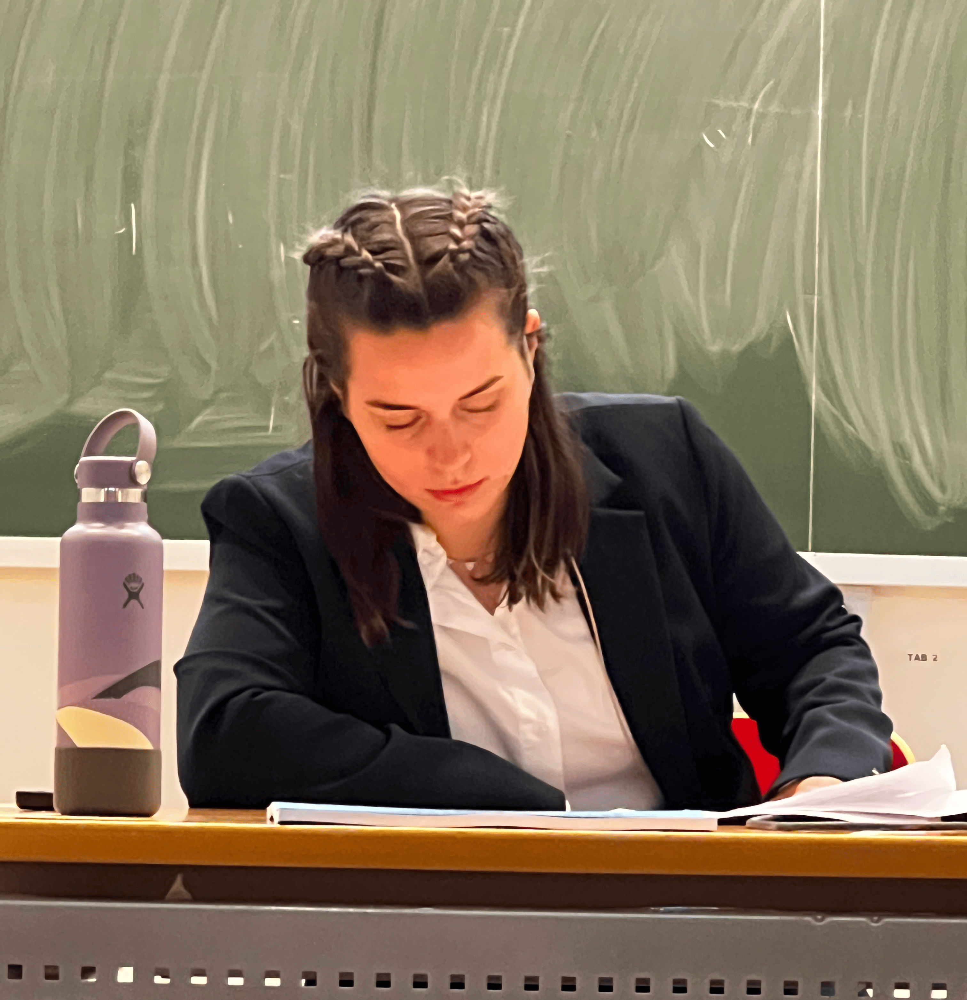

Jessie Levillain
Postdoctoral fellow, CNES · Applied Mathematics

I am currently a postdoctoral fellow in mathematical modeling and data hybridation for Earth Observation at CNES (Centre National des Etudes Spatiales), since December 2024. My aim is to develop mathematical methods to optimally combine satellite data from various sources while still being able to precisely quantify the associated uncertainty on relevant variables.
I obtained my PhD in September 2024, at CMAP (applied mathematics lab, École polytechnique), supervised by François Alouges and Aline Lefebvre-Lepot. The manuscript is available here. In 2019–2020, I was invited at Politecnico di Torino by Fabio Freschi, professor in the DENERG department. I am a former student at École Normale Supérieure Paris-Saclay, France.
Research
I now focus on three ongoing projects with applications to satellite data processing: mathematical modeling and inverse problems for river bathymetry estimates using variational data assimilation, and euclidean random assignment problems to track the dynamics of identical agents observed at various time stamps. I'm also interested in uncertainty propagation for quantities of interest (bathymetry, water volume…), and in machine learning techniques currently used in the Earth observation community.
During my PhD, I studied partial differential equations and numerical methods applied to swimming at the microscopic scale — understanding and modeling micro-swimmers (bacteria, algae, spermatozoa) and the mechanisms enabling them to swim, with an eye toward micro-robots for medical applications.
On the numerical side, I optimize computationally expensive simulations for larger-scale physics problems too, such as wireless power transfer for electric vehicles — methods that are also broadly applicable to fluid-structure simulations for micro-swimmers.
Publications
Preprints
- J. Levillain, J. Monnier. Bathymetry estimations in river networks from altimetry measurements, submitted, 2025 [preprint].
Journal papers
- F. Alouges, A. Lefebvre-Lepot, J. Levillain, C. Moreau. The N-link model for slender rods in a viscous fluid: well-posedness and convergence to classical elastohydrodynamics equations, Nonlinearity, 2025 [preprint][DOI].
- F. Alouges, I. Anello, A. DeSimone, A. Lefebvre-Lepot, J. Levillain. Some mathematical models for flagellar activation mechanisms, M3AS, 2025 [preprint][DOI].
- F. Alouges, A. Lefebvre-Lepot, J. Levillain. A limiting model for a low Reynolds number swimmer with N passive elastic arms, AIMS MinE, 2023 [PDF].
Conference papers
- R. Thoreau, J. Levillain, D. Derksen. Can Multimodal Representation Learning by Alignment preserve modality-specific information? ECML PKDD 2025, Communications in Computer and Information Science, vol 2843. Springer, 2026 [DOI][preprint].
- J. Levillain, F. Alouges, A. DeSimone, A. Choudhary, S. Nambiar, I. Bochert. A bi-directional low-Reynolds-number swimmer with passive elastic arms, ESAIM: Proceedings and Surveys, 2025 [PDF].
PhD thesis
Filament models for swimming at the microscopic scale, available here. Supervised by François Alouges and Aline Lefebvre-Lepot.
Report
- J. Levillain. Hierarchical matrices and Adaptive Cross-Approximation, DENERG, Politecnico di Torino (pre-doctoral research year), 2020 [PDF].
Communications
Upcoming
- 10/12–16/2026: PDEs under pressure and applications in life science, Institut de Mathématiques de Toulouse, Toulouse, France.
- 11/24–26/2026: Journées des Jeunes EDPistes en France, Institut de Mathématiques de Bordeaux, Bordeaux, France.
2026
- 06/22–26/2026: XVIIème Colloque Franco-Roumain de Mathématiques Appliquées, Nancy, France.
- 06/01–06/2026: CANUM 2026, Saint-Jacut-de-la-Mer, France.
- 03/19/2026: Séminaire Analyse numérique et Modélisation, IRMAR, Rennes, France.
- 03/2–4/2026: CJC-MA 2026, Ecole Nationale des Ponts et Chaussées, Champs sur Marne, France.
- 02/26/2026: LMAH seminar, LMAH, Université Le Havre Normandie, Le Havre, France.
- 02/06/2026: PDE seminar, IECL, Université de Lorraine, Metz, France.
- 01/29/2026: Rencontre jeunes chercheurs X-Recherche, Maison des X, Paris, France.
- 01/22/2026: EDPAN seminar, LMBP, Université Clermont Auvergne, Clermont-Ferrand, France.
- 01/13/2026: Applied analysis team seminar, I2M, Université Aix-Marseille, Marseille, France.
2025
- 11/24/2025: PDE Seminar, Department of Mathematics, Purdue University, Lafayette IN, USA.
- 11/21/2025: Applied and Computational Math seminar, Department of Mathematics, University of Wisconsin, Madison, WI, USA.
- 11/17–20/2025: SIAM conference on analysis of partial differential equations (PD25), Pittsburgh, PA, USA.
- 11/06/2025: Journées Math Bio Santé (JMBS) 2025, poster presentation, Université Montpellier 2, Montpellier, France.
- 10/23/2025: ReV Team seminar, LS2N, Centrale Nantes, Nantes, France.
- 10/21/2025: MACS Team seminar, LMJL, Université de Nantes, Nantes, France.
- 10/15/2025: Journées Jeunes Chercheurs CNES, poster presentation, Cité de l'Espace, Toulouse, France.
- 06/16/2025: SuPerGRandMa seminar, Université Paris-Saclay, Orsay, France.
- 06/05/2025: SMAI 2025, Carcans, France.
- 05/27/2025: 7e édition du Symposium MADICs, poster presentation, Université Toulouse Capitole, Toulouse, France.
- 03/12/2025: Séminaire Analyse, Phénomènes Stochastiques et Applications, LMBA, Université de Bretagne Occidentale, Brest, France.
2024
- 10/22/2024: Workshop "Bio- and bio-inspired locomotion of elongated bodies across scales and fields", LS2N, Ecole Centrale Nantes, Nantes, France.
- 09/11/2024: Conférence des 50 ans du CMAP, poster presentation, École polytechnique, Palaiseau, France.
- 05/30/2024: CANUM 2024, mini-symposium organizer and talk on low-Reynolds-number swimming, Le Bois-Plage-en-Ré, Île de Ré, France.
- 04/15/2024: Séminaire de l'équipe CALISTO, INRIA Université Côte D'Azur, Sophia Antipolis, France.
- 03/20/2024: Séminaire des doctorants du LAMFA, LAMFA, Amiens, France.
- 01/17/2024: Journée Maths en herbe (seminar for undergraduates), FMJH, talk Introduction to micro-swimming. IHES, Bures-sur-Yvette, France.
2023
- 09/25/2023: Le Congrès des Jeunes Chercheurs en Mathématiques et Applications 2023, talk Bi-directional low-Reynolds-number swimmer models. CentraleSupéléc, Gif-sur-Yvette, France.
- 08/30/2023: Talk at RIMS Fluid Dynamics Workshop, Kyoto, Japan.
- 08/22/2023: ICIAM 2023, mini-symposium on "Low-Reynolds-number swimming: modelling, analysis and applications", Tokyo, Japan. Talk and co-organization of MS with C. Moreau.
- 07/05/2023: XX Jacques-Louis Lions Spanish-French School on Numerical Simulations in Physics & Engineering, poster presentation, Barcelona, Spain.
- 06/16/2023: AJS Seminars, SISSA, Trieste, Italy [abstract].
- 01/25/2023: Séminaire des doctorants du CMAP et du CMLS, École polytechnique, Palaiseau, France.
2022
- 10/26/2022: RIMS Fluid Dynamics Group seminar, Kyoto University, Japan.
- 10/18/2022: Microscale Ocean Biophysics online seminar.
- 09/21–23/2022: Le Congrès des Jeunes Chercheurs en Mathématiques et Applications 2022, Calais, France. A mathematical model of flagellar activation mechanisms.
- 06/13–17/2022: CANUM 2020+2, Flagellar Locomotion of Micro-organisms, invited by L. Giraldi and P. Lissy (mini-symposium) [PDF].
Teaching
2021–2024: École polytechnique
- MAP350: Preparatory mathematics course, 1st year of Ingénieur Polytechnicien Program.
- Numerical Analysis 2: Linear Algebra and Optimization (MAA251, Bachelor of Science, 2nd year).
- Computational mathematics (MAA106, Bachelor of Science, 1st year).
- Supervision of Bachelor Theses (internships, 3rd year): "Introduction to image denoising: on BM3D"; "On the Perron–Frobenius theorem: discovering Google's PageRank algorithm".
Previous teaching experience
- 2020–2021 — Tutoring in Mathematics for Bachelor of Science students at Institut Villebon-Charpak, Université Paris-Saclay.
- 2018–2019 — Guest teacher in mathematics for high-schoolers at INSEP.
Game

Try out Pulse Panic, a game coded during the Toulouse scientific game jam (2026 edition): create and guide your nanobot to attack Mrs. Thrombosis and save your patient from a stroke!